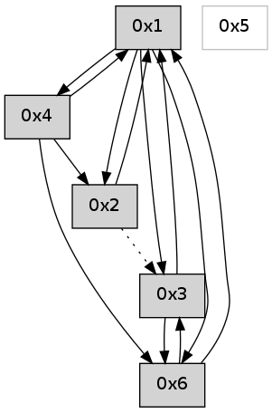

>> << IDX [start] -100 -25 -5 +0 +5 +25 +100 [630.048079014]
 Previous packets
----------------------------------------------------------------------
625.126996 beacon01(adaf) #0 coord=01,02,05,03,04,06 cycle=432.0ms assoc
-- color-indic=0 64 9b 7a
625.136960 beacon02(adaf) #0 coord=01,02,05,03,04,06 cycle=432.0ms assoc 64 ca 85
625.146958 beacon05(adaf) #0 coord=01,02,05,03,04,06 cycle=432.0ms assoc 64 6c af
625.156958 beacon03(adaf) #0 coord=01,02,05,03,04,06 cycle=432.0ms assoc 64 f0 8b
625.166958 beacon04(adaf) #0 coord=01,02,05,03,04,06 cycle=432.0ms assoc 64 56 a1
625.176960 beacon06(adaf) #0 coord=01,02,05,03,04,06 cycle=432.0ms assoc 64 22 bd
625.188391 [Hello(1): seq=325 sym=2,3,4 sysInfo= stat=2:0,0,0,0/3:2,0,0,0/4:2,0,0,0]
625.192285 [Hello(4): seq=426 sym=6,1,2 sysInfo= stat=6:1,0,0,0/1:2,0,0,0/2:3,0,0,0]
----------------------------------------------------------------------
625.619106 beacon01(adaf) #0 coord=01,02,05,03,04,06 cycle=432.0ms assoc
-- color-indic=0 64 5f 15
625.629067 beacon02(adaf) #0 coord=01,02,05,03,04,06 cycle=432.0ms assoc 64 0e ea
625.639067 beacon05(adaf) #0 coord=01,02,05,03,04,06 cycle=432.0ms assoc 64 a8 c0
625.649067 beacon03(adaf) #0 coord=01,02,05,03,04,06 cycle=432.0ms assoc 64 34 e4
625.659068 beacon04(adaf) #0 coord=01,02,05,03,04,06 cycle=432.0ms assoc 64 92 ce
625.669068 beacon06(adaf) #0 coord=01,02,05,03,04,06 cycle=432.0ms assoc 64 e6 d2
625.680763 [Hello(2): seq=921 sym=4,1 asym=3 sysInfo= stat=4:0,0,0,0/1:9,0,0,0/3:3,0,0,0]
----------------------------------------------------------------------
626.111213 beacon01(adaf) #0 coord=01,02,05,03,04,06 cycle=432.0ms assoc
-- color-indic=0 64 12 12
626.121173 beacon02(adaf) #0 coord=01,02,05,03,04,06 cycle=432.0ms assoc 64 43 ed
626.131175 beacon05(adaf) #0 coord=01,02,05,03,04,06 cycle=432.0ms assoc 64 e5 c7
626.141174 beacon03(adaf) #0 coord=01,02,05,03,04,06 cycle=432.0ms assoc 64 79 e3
626.151175 beacon04(adaf) #0 coord=01,02,05,03,04,06 cycle=432.0ms assoc 64 df c9
626.161175 beacon06(adaf) #0 coord=01,02,05,03,04,06 cycle=432.0ms assoc 64 ab d5
626.172857 [Hello(4): seq=427 sym=6,1,2 sysInfo= stat=6:1,0,0,0/1:2,0,0,0/2:4,0,0,0]
626.176562 [Hello(1): seq=326 sym=2,3,4 sysInfo= stat=2:1,0,0,0/3:2,0,0,0/4:3,0,0,0]
----------------------------------------------------------------------
626.603322 beacon01(adaf) #0 coord=01,02,05,03,04,06 cycle=432.0ms assoc
-- color-indic=0 64 d6 7d
626.613282 beacon02(adaf) #0 coord=01,02,05,03,04,06 cycle=432.0ms assoc 64 87 82
626.623284 beacon05(adaf) #0 coord=01,02,05,03,04,06 cycle=432.0ms assoc 64 21 a8
626.633283 beacon03(adaf) #0 coord=01,02,05,03,04,06 cycle=432.0ms assoc 64 bd 8c
626.643284 beacon04(adaf) #0 coord=01,02,05,03,04,06 cycle=432.0ms assoc 64 1b a6
626.653283 beacon06(adaf) #0 coord=01,02,05,03,04,06 cycle=432.0ms assoc 64 6f ba
626.664989 [Hello(2): seq=922 sym=4,1 asym=3 sysInfo= stat=4:0,0,0,0/1:10,0,0,0/3:4,0,0,0]
----------------------------------------------------------------------
627.095429 beacon01(adaf) #0 coord=01,02,05,03,04,06 cycle=432.0ms assoc
-- color-indic=0 64 9a cd
627.105390 beacon02(adaf) #0 coord=01,02,05,03,04,06 cycle=432.0ms assoc 64 cb 32
627.115390 beacon05(adaf) #0 coord=01,02,05,03,04,06 cycle=432.0ms assoc 64 6d 18
627.125391 beacon03(adaf) #0 coord=01,02,05,03,04,06 cycle=432.0ms assoc 64 f1 3c
627.135390 beacon04(adaf) #0 coord=01,02,05,03,04,06 cycle=432.0ms assoc 64 57 16
627.145391 beacon06(adaf) #0 coord=01,02,05,03,04,06 cycle=432.0ms assoc 64 23 0a
627.156821 [Hello(1): seq=327 sym=2,3,4 sysInfo= stat=2:1,0,0,0/3:2,0,0,0/4:3,0,0,0]
627.160713 [Hello(4): seq=428 sym=6,1,2 sysInfo= stat=6:1,0,0,0/1:3,0,0,0/2:5,0,0,0]
----------------------------------------------------------------------
627.587537 beacon01(adaf) #0 coord=01,02,05,03,04,06 cycle=432.0ms assoc
-- color-indic=0 64 5e a2
627.597498 beacon02(adaf) #0 coord=01,02,05,03,04,06 cycle=432.0ms assoc 64 0f 5d
627.607498 beacon05(adaf) #0 coord=01,02,05,03,04,06 cycle=432.0ms assoc 64 a9 77
627.617498 beacon03(adaf) #0 coord=01,02,05,03,04,06 cycle=432.0ms assoc 64 35 53
627.627498 beacon04(adaf) #0 coord=01,02,05,03,04,06 cycle=432.0ms assoc 64 93 79
627.637501 beacon06(adaf) #0 coord=01,02,05,03,04,06 cycle=432.0ms assoc 64 e7 65
627.649190 [Hello(2): seq=923 sym=1 asym=3 sysInfo= stat=1:11,0,0,0/3:4,0,0,0]
----------------------------------------------------------------------
628.079644 beacon01(adaf) #0 coord=01,02,05,03,04,06 cycle=432.0ms assoc
-- color-indic=0 64 00 c3
628.089605 beacon02(adaf) #0 coord=01,02,05,03,04,06 cycle=432.0ms assoc 64 51 3c
628.099605 beacon05(adaf) #0 coord=01,02,05,03,04,06 cycle=432.0ms assoc 64 f7 16
628.109606 beacon03(adaf) #0 coord=01,02,05,03,04,06 cycle=432.0ms assoc 64 6b 32
628.119605 beacon04(adaf) #0 coord=01,02,05,03,04,06 cycle=432.0ms assoc 64 cd 18
628.129607 beacon06(adaf) #0 coord=01,02,05,03,04,06 cycle=432.0ms assoc 64 b9 04
628.141289 [Hello(4): seq=429 sym=6,1,2 sysInfo= stat=6:1,0,0,0/1:3,0,0,0/2:6,0,0,0]
628.145979 [Hello(1): seq=328 sym=2,3,4 sysInfo= stat=2:2,0,0,0/3:2,0,0,0/4:4,0,0,0]
----------------------------------------------------------------------
628.571755 beacon01(adaf) #0 coord=01,02,05,03,04,06 cycle=432.0ms assoc
-- color-indic=0 64 c4 ac
628.591717 beacon05(adaf) #0 coord=01,02,05,03,04,06 cycle=432.0ms assoc 64 33 79
628.621716 beacon06(adaf) #0 coord=01,02,05,03,04,06 cycle=432.0ms assoc 64 7d 6b
628.633395 [Hello(6): seq=344 sym=3 asym=1 sysInfo= stat=3:4,0,0,0/1:4,0,0,0]
----------------------------------------------------------------------
629.063864 beacon01(adaf) #0 coord=01,02,05,03,04,06 cycle=432.0ms assoc
-- color-indic=0 64 88 1c
629.073825 beacon02(adaf) #0 coord=01,02,05,03,04,06 cycle=432.0ms assoc 64 d9 e3
629.083825 beacon05(adaf) #0 coord=01,02,05,03,04,06 cycle=432.0ms assoc 64 7f c9
629.093828 beacon03(adaf) #0 coord=01,02,05,03,04,06 cycle=432.0ms assoc 64 e3 ed
629.103826 beacon04(adaf) #0 coord=01,02,05,03,04,06 cycle=432.0ms assoc 64 45 c7
629.113826 beacon06(adaf) #0 coord=01,02,05,03,04,06 cycle=432.0ms assoc 64 31 db
629.124635 [Hello(1): seq=329 sym=2,3,4,6 mpr= sysInfo= stat=2:2,0,0,0/3:2,0,0,0/4:4,0,0,0/6:0,0,0,0]
----------------------------------------------------------------------
629.555972 beacon01(adaf) #0 coord=01,02,05,03,04,06 cycle=432.0ms assoc
-- color-indic=0 64 4c 73
629.565932 beacon02(adaf) #0 coord=01,02,05,03,04,06 cycle=432.0ms assoc 64 1d 8c
629.575932 beacon05(adaf) #0 coord=01,02,05,03,04,06 cycle=432.0ms assoc 64 bb a6
629.585932 beacon03(adaf) #0 coord=01,02,05,03,04,06 cycle=432.0ms assoc 64 27 82
629.595933 beacon04(adaf) #0 coord=01,02,05,03,04,06 cycle=432.0ms assoc 64 81 a8
629.605934 beacon06(adaf) #0 coord=01,02,05,03,04,06 cycle=432.0ms assoc 64 f5 b4
629.617590 [Hello(6): seq=345 sym=3,1 sysInfo= stat=3:5,0,0,0/1:5,0,0,0]